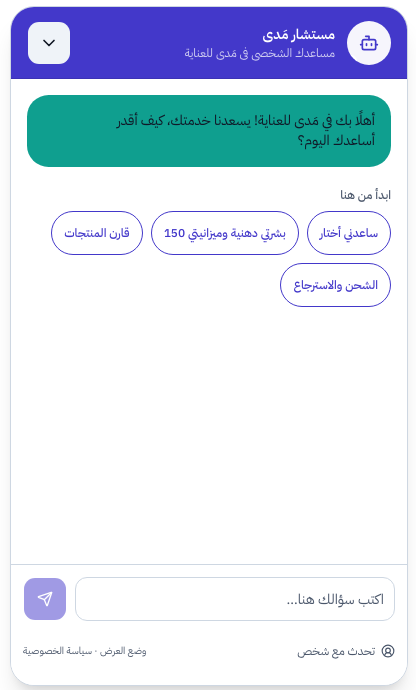
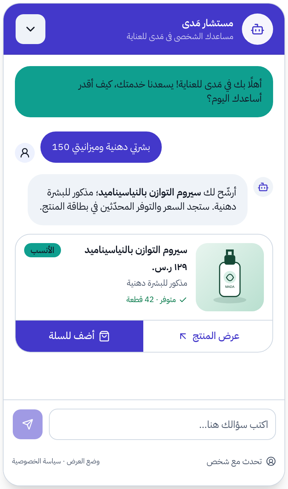
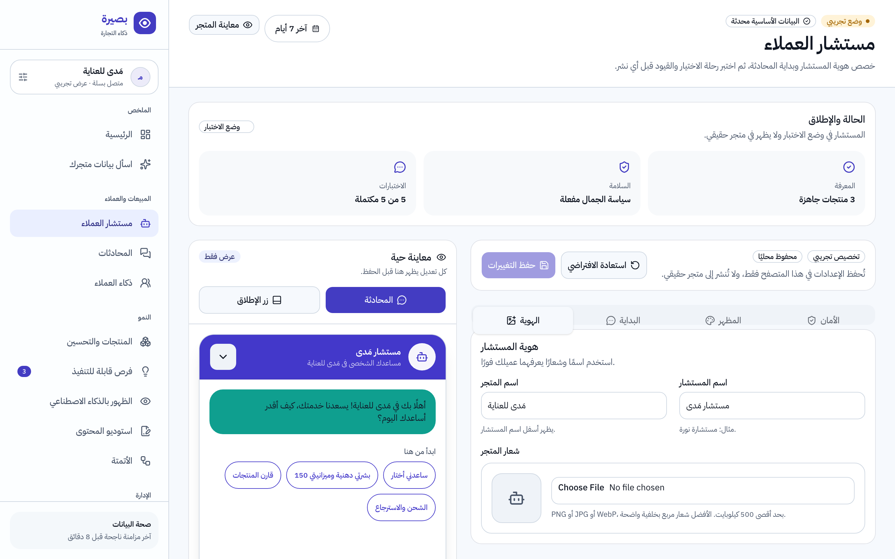
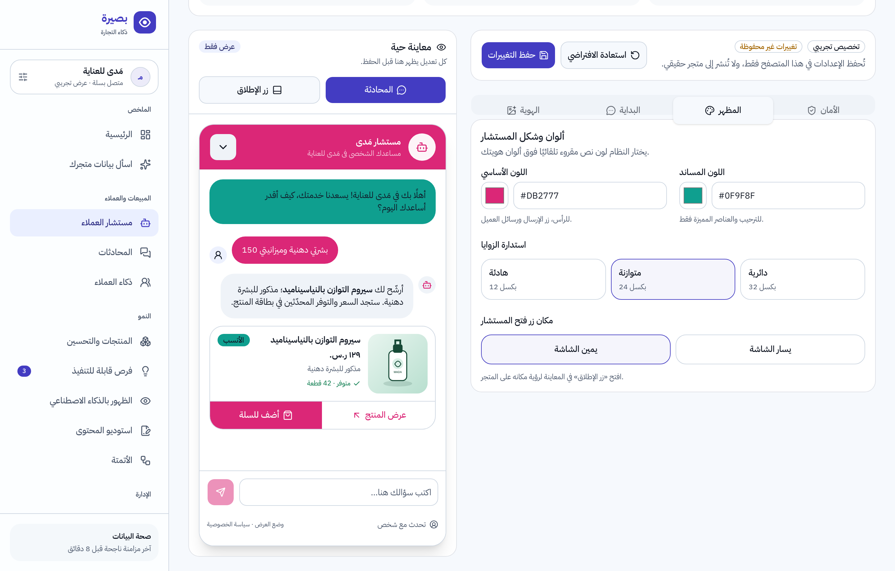
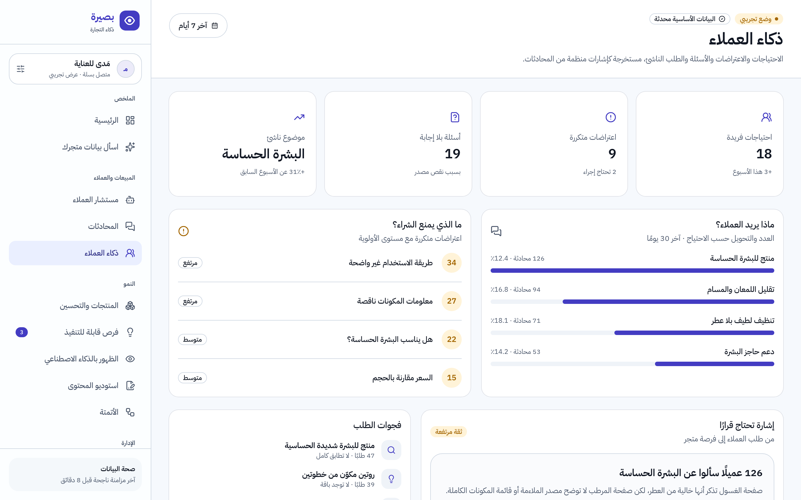
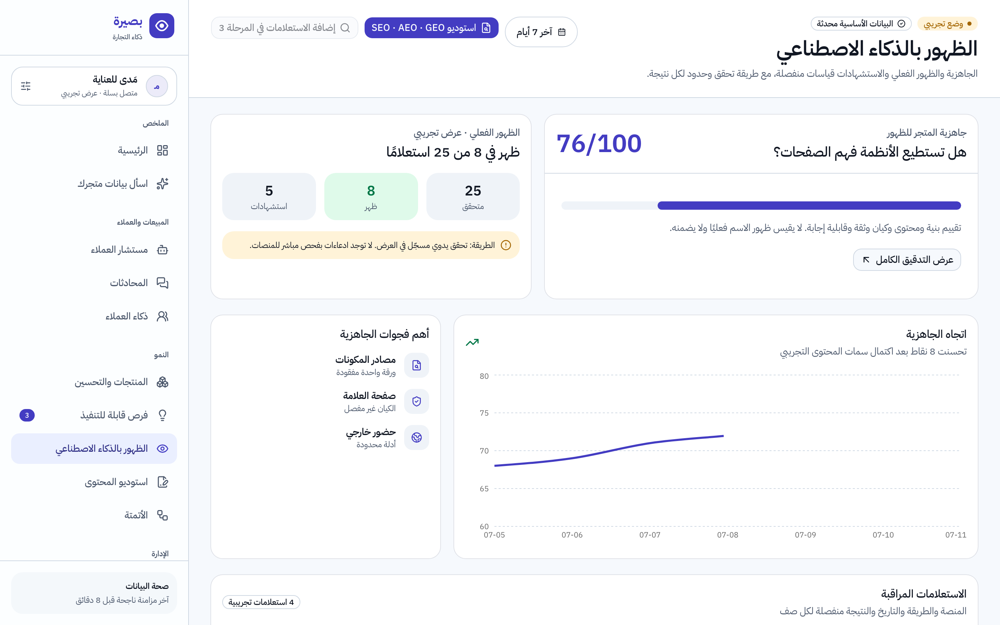
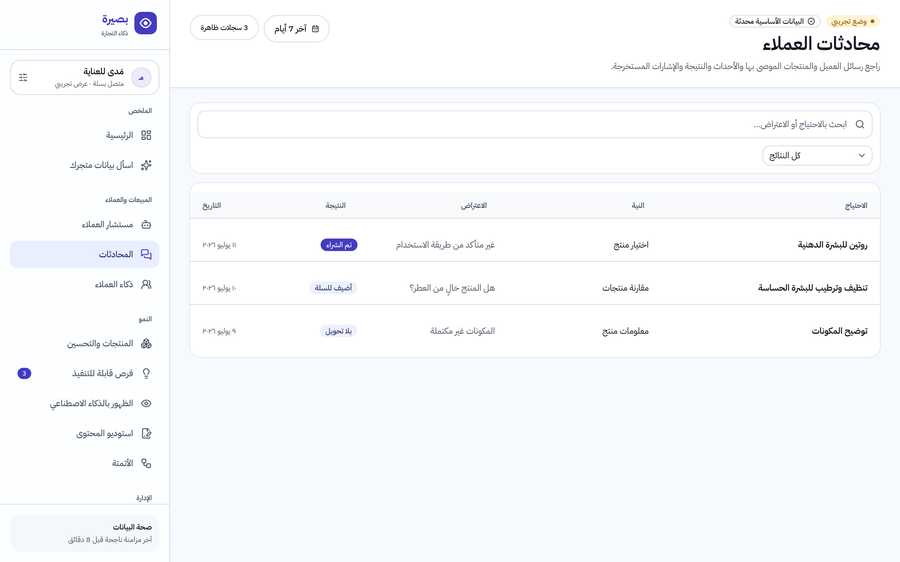
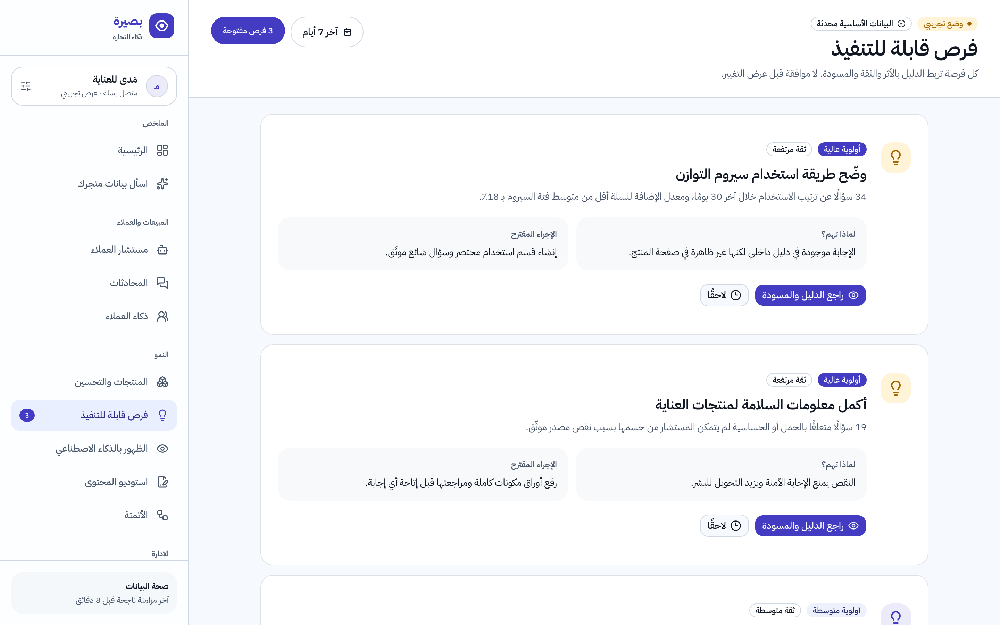
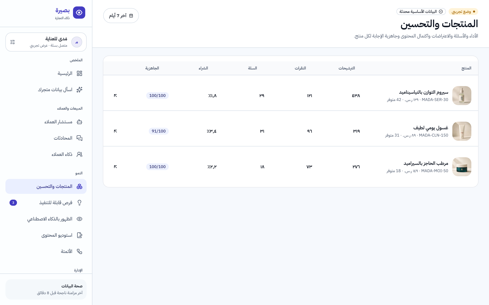
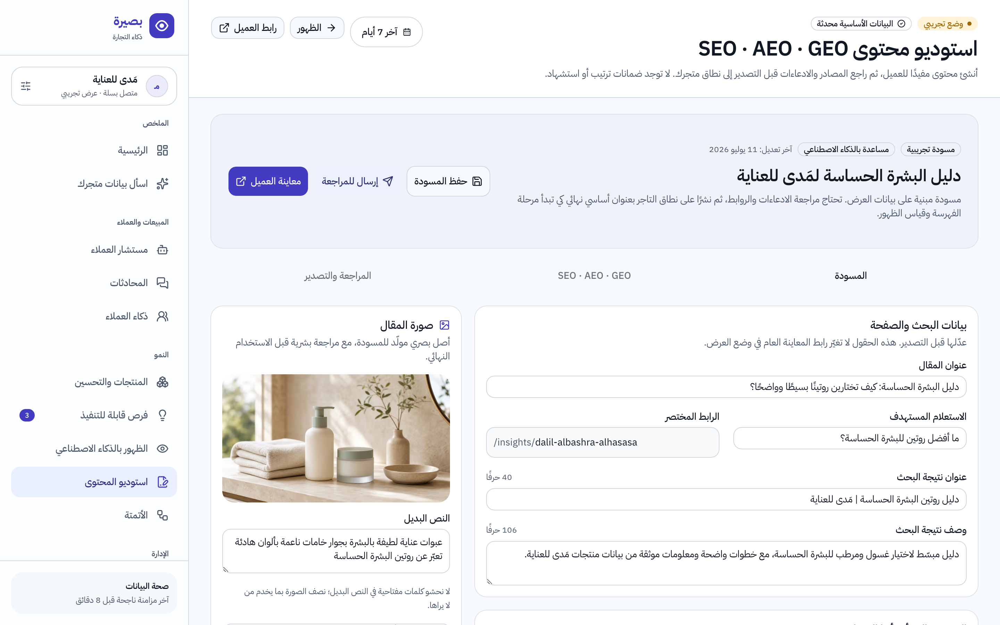

مستشار ذكي يبيع من بيانات متجرك،
ولوحة تُريك ماذا يريد عملاؤك فعلًا
بصيرة تحوّل محادثات زوارك إلى توصيات منتجات موثّقة، وتحوّل أسئلتهم المتكررة إلى قرارات نمو واضحة — بالعربية أولًا، ومن حقائق متجرك فقط دون اختلاق سعر أو مخزون أو معلومة.
كل رقم له مصدر، وكل توصية لها سبب
ليست شات بوت يجامل الزوار — بل طبقة ذكاء كاملة فوق بيانات متجرك في سلة.
يجيب كما يجيب أفضل موظف مبيعات
يفهم سؤال العميل بالعربية (وباللهجة)، يرشّح المنتج المناسب حسب الاحتياج والميزانية، ويشرح لماذا اختاره.
لا يخترع سعرًا ولا مخزونًا
كل بطاقة منتج يعرضها مأخوذة مباشرة من بيانات متجرك: السعر، التوفر، والسمات الموثّقة فقط.
يحوّل الأسئلة إلى مبيعات
يرصد ما الذي يمنع الشراء — طريقة استخدام غير واضحة؟ مكونات ناقصة؟ — ويحوّله إلى فرصة قابلة للتنفيذ.
بهوية متجرك أنت
استوديو علامة كامل: شعارك، ألوانك، اسم مستشارك، ورسالة ترحيبك — مع معاينة حية قبل أي نشر.
جاهز لعصر البحث بالذكاء الاصطناعي
يفحص هل تستطيع أنظمة الإجابة فهم صفحاتك والاستشهاد بها، ويعطيك خطة إغلاق الفجوات بندًا بندًا.
آمن على علامتك
سياسات سلامة مدمجة: لا ادعاءات طبية، لا وعود مضلّلة، وتحويل مهذب لفريقك في الأسئلة الحساسة.
هكذا تبدو المحادثة لعميلك — خطوة بخطوة
من أول ترحيب إلى بطاقة المنتج، كل عنصر مصمم ليقود نحو قرار شراء واثق.
- 1ترحيب باسم متجرك وأزرار بداية سريعة«ساعدني أختار»، «قارن المنتجات»، «الشحن والاسترجاع» — يبدأ العميل بنقرة واحدة دون حيرة.
- 2يفهم الاحتياج والميزانية حتى باللهجة«بشرتي دهنية وميزانيتي 150» تكفي — يستخرج نوع البشرة والميزانية والفئة تلقائيًا.
- 3يرشّح «الأنسب» ويشرح السبب«مذكور للبشرة الدهنية» — تبرير حقيقي من سمات المنتج الموثّقة، لا مجاملة عامة.
- 4بطاقة منتج تبيع فعلًاالسعر الحقيقي، المخزون المتاح «متوفر · 42 قطعة»، وزرا «عرض المنتج» و«أضف للسلة».
- 5صادق حين لا يجد إجابةيعتذر بلطف ويقترح توسيع الخيارات أو التحويل لفريق المتجر — وزر «تحدث مع شخص» دائمًا في المتناول.

لحظة الفتح: ترحيب + اقتراحات جاهزة

التوصية: بطاقة موثّقة بشارة «الأنسب»
موظف مبيعات لا ينام، على واجهة متجرك
عميلك يكتب «بشرتي دهنية وميزانيتي 150» — والمستشار يرشّح المنتج الصحيح ببطاقة سعر وتوفر حقيقيين، ويضيف البدائل للمقارنة.
- ✓فهم عربي للاحتياج والميزانية ونوع البشرةمع أزرار بداية سريعة تناسب متجرك
- ✓ترشيح مفلتر من الكتالوج الفعليلا يظهر منتج غير متوفر أو خارج الشروط
- ✓تخصيص كامل للهوية من استوديو العلامةالاسم، الشعار، الألوان، ورسالة الترحيب

صمّم المحادثة بشعارك وألوانك — وشاهدها تتغير مباشرة
غيّر اللون الأساسي إلى لون شعارك، وكل شيء يتبدل أمامك في المعاينة الحية: الرأس، الفقاعات، الأزرار، وزر الإطلاق — قبل أن يراه أي عميل.

اللون تغيّر إلى #DB2777 — والمستشار كله تبع هوية المتجر فورًا، مع اختيار تلقائي للون نص مقروء
شعارك في الواجهة
ارفع شعار متجرك ليظهر في رأس المحادثة وزر الإطلاق، مع اسم مستشار من اختيارك.
ألوان بلا اجتهاد
اختر لونك الأساسي والمساند، والنظام يختار تلقائيًا لون نص مقروءًا فوق ألوان هويتك.
شكل وموضع يناسبانك
استدارة الزوايا (هادئة، متوازنة، دائرية)، وموضع زر المستشار يمين الشاشة أو يسارها.

اعرف ماذا يريد عملاؤك قبل منافسيك
كل محادثة تتحول إلى إشارة منظمة: احتياجات صاعدة، اعتراضات متكررة، وأسئلة لا يجيب عنها متجرك بعد.
- ✓«ما الذي يمنع الشراء؟» مرتبة حسب الأولويةطريقة الاستخدام؟ المكونات؟ السعر مقابل الحجم؟
- ✓مواضيع ناشئة قبل أن تصبح اتجاهًامثل ارتفاع أسئلة البشرة الحساسة أسبوعًا بعد أسبوع
- ✓فجوات الطلب: ما يبحث عنه العملاء ولا تملكهإشارات تسعير وتشكيلة مبنية على طلب حقيقي
عملاؤك بدؤوا يسألون ChatGPT — هل متجرك جاهز؟
بصيرة تفحص جاهزية متجرك للظهور في إجابات الذكاء الاصطناعي عبر SEO وAEO وGEO، وتفصل بوضوح بين الجاهزية والظهور الفعلي — بلا وعود زائفة.
- ✓درجة جاهزية من 100 لكل مكوّنالبنية، المحتوى، الكيان، الثقة، وقابلية الإجابة
- ✓أهم الفجوات مع خطوة الإصلاح التاليةمصادر مكونات ناقصة؟ صفحة علامة ضعيفة؟
- ✓استوديو محتوى ينتج مقالات مسندة بالأدلةكل ادعاء مربوط بحقيقة موثّقة من متجرك

وهذا ليس كل شيء
كل شاشة في بصيرة مبنية بنفس المبدأ: عربية أولًا، أرقام لها مصدر، وخطوة تالية واضحة.




ثلاث خطوات من التثبيت إلى أول توصية
اربط متجرك من سلة
تثبيت بنقرة واحدة من متجر تطبيقات سلة، ومزامنة آمنة لمنتجاتك وبياناتك.
خصص مستشارك
اسمه، شعارك، ألوانك، ورسالة الترحيب — مع معاينة حية واختبار قبل النشر.
راقب القرارات لا الأرقام
لوحة عربية تريك الأثر والعائق والخطوة التالية — مع مصدر وفترة واضحة لكل رقم.
جرّب بصيرة على متجرك اليوم
انضم لعصر التجارة الذكية بالعربية — مستشار يبيع، وذكاء يقرر، وجاهزية لعالم يبحث بالذكاء الاصطناعي.
ثبّت بصيرة من متجر تطبيقات سلة ← إعداد يستغرق دقائق · دعم عربي · بياناتك تبقى بياناتكالفيديو ولقطات الشاشة أعلاه مسجلة من منتج بصيرة الفعلي دون مونتاج، على بيانات متجر تجريبي مُعلَّم بوضوح. درجات الجاهزية فحوصات قابلة للتحقق على محتوى متجرك، ولا تضمن بصيرة ترتيبًا أو ظهورًا محددًا في أي محرك بحث أو منصة ذكاء اصطناعي.